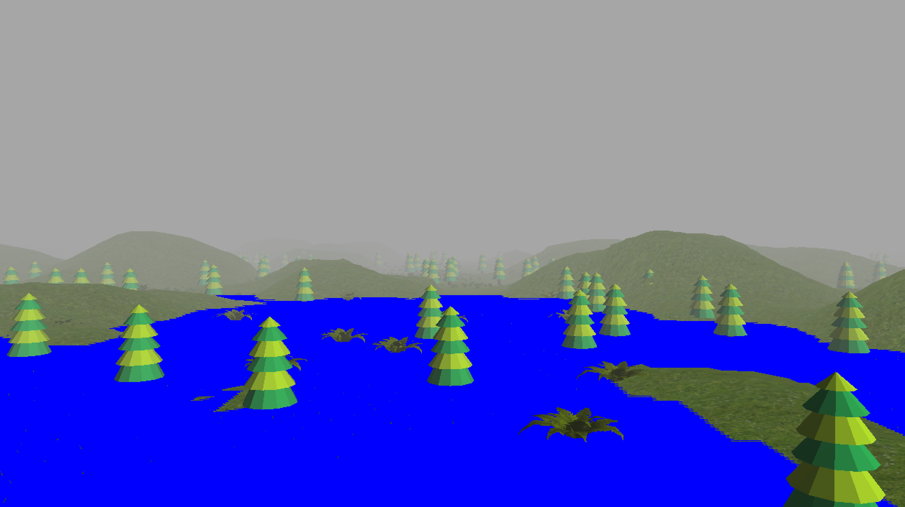

1. Background
A water simulation using Java and OpenGLthat focuses on a realistic render of water such as reflection, refraction, and somethign else. This page goes through the process of how this project was completed and the results at each step. Our source code will be linked at the bottom. Our first step was completing a background map to contain the water. It would be difficult to simulate water without some sort of container, so we decided to create a map for it. This was done by finding 3D models of trees and terrain online and putting them inside our world coordinates. From there, we created the viewport and some shader files (GLSL) for basic local illumination models. Finally, we placed a texture mapping onto the terrain and trees as well as a heigh map to give terrain depth that will be later used as the container for the water.

2. Water Tiles
Next, we needed to create an initial rendering of the water. This was done by defining a water tile along with a water shader and renderer with its respective textures. It was also necessary to place the water in a part of the scene where it was visible.
